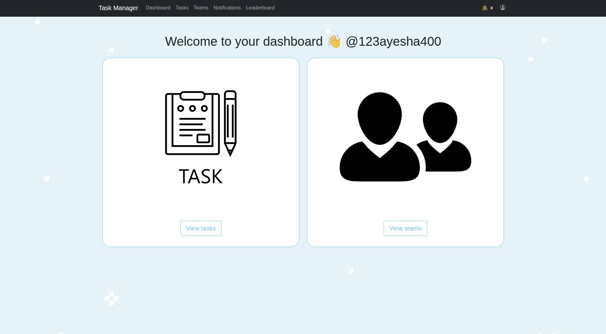

Django Task Management & Productivity Platform

This task management application is a Django productivity platform designed to help users organise work, manage teams and track task progress in a structured way.
Users can create teams, invite members, create and assign tasks, manage priorities and deadlines, update task status and monitor completion progress across different members.
The application also includes notifications, search and filtering, activity logging, completion-time tracking, weekly productivity reporting and a points-based leaderboard.
Users can create teams, invite other users, accept or decline invitations and manage team membership.
Tasks can be assigned to multiple team members, with creators able to update assignments when responsibilities change.
Tasks support low, medium and high priorities alongside Not Started, In Progress and Completed workflow states.
Users receive notifications for upcoming tasks, team invitations and completed tasks that still require completion-time logging.
Tasks can be searched by title and filtered by status, priority and date ranges, with sorting by due date, name or priority.
Completion times are recorded per user and task, allowing weekly productivity information to be calculated for individual team members.
The application is structured around Django models, forms and views, with separate responsibilities for authentication, team management, task workflows, validation and reporting.
Users, teams, invitations, tasks, activity records and completion-time records are linked using Django model relationships.
Sensitive actions are restricted based on ownership and team roles, preventing users from editing or deleting resources they do not control.
Django forms validate task deadlines, reminders, invitation state, duplicate task names and password requirements before data is saved.
Important user actions such as task creation, deletion, team management and status updates are recorded in a dedicated activity log.
The application manages the full lifecycle of a task from creation and assignment through to completion and reporting.
Users create tasks with descriptions, priorities, due dates, reminder dates and a target team.
Tasks can be assigned to selected members of the associated team.
Task status can move through Not Started, In Progress and Completed states while deadlines and reminders are monitored.
When a task is completed, assigned users can log how long the task took to complete.
Different actions needed different access rules. Task creators control editing, deletion and reassignment, while team administrators manage team membership and invitations.
Reminder dates must remain between the current time and the final task deadline. Custom form validation prevents invalid task schedules from being saved.
Completion-time data depends on task status. When a completed task is reopened, previously recorded completion information is cleared to keep the stored state consistent.
Search, filtering and ordering were added so users can quickly locate tasks by name, status, priority and deadline instead of manually scanning long task lists.
The application includes a notification system for team invitations, approaching deadlines and completed tasks that still require completion-time logging.
High-priority task reminders are surfaced when their reminder date is reached, helping users keep track of urgent work.
Completion-time records are aggregated by user and week to provide an overview of how much time individual team members spent completing tasks.
Users can navigate between different weeks to review historical productivity and compare team activity over time.
The application includes a leaderboard that awards points based on completed task priority.
Low-priority tasks award fewer points, while higher-priority tasks contribute more, allowing users to be ranked according to their completed work.
A demonstration of the Task Management App showing the task workflow, team features and application interface.